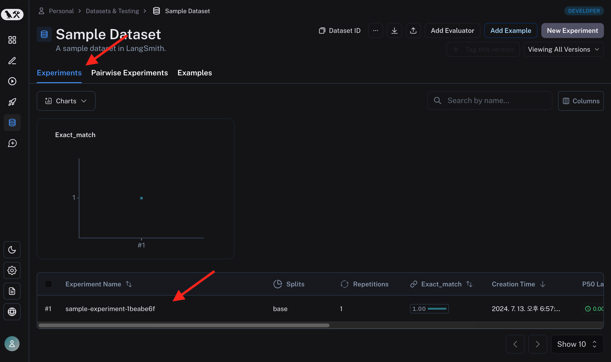

Evaluation (평가)
데이터를 준비했으니 Evaluation 도 해보겠습니다. 먼저 가장 간단한 예시 부터 시작합니다. 필자 의견으로는 가장 유용한 기능이니 "Evaluation" 문서는 한 번 쭉 보시는 것을 추천드립니다.
Quick Start
아래 코드를 수행하면, 데이터셋을 만들고, example을 추가하고, 평가합니다.
from langsmith import Client
from langsmith.evaluation import evaluate
client = Client()
# Define dataset: these are your test cases
dataset_name = "Sample Dataset"
dataset = client.create_dataset(dataset_name, description="A sample dataset in LangSmith.")
client.create_examples(
inputs=[
{"postfix": "to LangSmith"},
{"postfix": "to Evaluations in LangSmith"},
],
outputs=[
{"output": "Welcome to LangSmith"},
{"output": "Welcome to Evaluations in LangSmith"},
],
dataset_id=dataset.id,
)
# Define your evaluator
def exact_match(run, example):
return {"score": run.outputs["output"] == example.outputs["output"]}
experiment_results = evaluate(
lambda input: "Welcome " + input['postfix'], # Your AI system goes here
data=dataset_name, # The data to predict and grade over
evaluators=[exact_match], # The evaluators to score the results
experiment_prefix="sample-experiment", # The name of the experiment
metadata={
"version": "1.0.0",
"revision_id": "beta"
},
)
코드의 주요 요소는 다음과 같습니다. - Datatsets 에 example 추가 - Evalutation 함수 정의 : exact_match - 평가 대상인 LLM 어플리케이션은 간단하게 lambda 로 정의해 넣었습니다. - 단순 텍스트 치환함수 입니다.
Exact Match 테스트한 결과를 LangSmith에서 확인하면, 다음과 같습니다.
Experiment 가 생겼고 그 결과가 표시됩니다.

{kind=link}
결과를 클릭하여 더 자세히 보겠습니다.
{kind=link}
각 데이터셋 example에 대해 LLM 어플리케이션의 output, 평가 결과까지 잘 매겨져 나왔습니다. 위에서 수행한 evaluation 도 Run 이고 Trace 이기 때문에 프로젝트에 추적 결과가 생성됩니다.

evaluators 라는 이름의 프로젝트로 trace 를 추적할 수 있습니다.
예상과 다르게 평가 결과가 안 좋았다면, 그 이유를 찾는 디버깅이 가능하겠네요.
Custom Evaluator
위 간단한 예시에서는 exact_match, 정확하게 일치하는 지를 기준으로 평가했습니다. 문제집의 정답 채점하는 것 처럼요.
LLM 어플리케이션의 가장 어려운 점은 평가가 정성적인 경우가 많다는 점 입니다.
그래서, Evaluation을 제 맘대로 만들 수 있어야 합니다.
위 exact_math 함수 처럼 맘대로 만들면 됩니다. 지켜야 할일은 in/out 형식만 잘 맞춰주면 되겠죠.
from langsmith.schemas import Example, Run
def exact_match(root_run: Run, example: Example) -> dict:
score = root_run.outputs.get("output") == example.outputs.get("label")
return {"score": int(score), "key": "correct_label"}
output 은 dict 타입입니다. 여기에는 현재 score, key 가 달려 있는데, 평가 결과가 곧 피드백이기 떄문에 피드백의 형식을 지켜줘야합니다.
자세한 내용은 피드백 데이터 포맷 문서를 참고하세요.
LangChain 내장 평가 함수
Custom Evaluator 로 평가 로직을 마음대로 만들 수 있는 것 좋습니다.
그런데... 언제 다 만들죠. 어떻게 평가해야하는게 좋을까요??
그래서 많이 쓰일 법한 평가 함수들은 이미 다 만들어져 있습니다.
무엇보다도 LLM as judge, LLM 에게 채점을 시키는 방법이 구현이 되어있습니다.
한번 보겠습니다.
Q&A Correctness
질문과 답 데이터 세트를 준비했다면, 내가 만든 LLM 어플리케이션 한테 시험을 보게 시키고 맞았는지 틀렸는지 확인해볼 수 있습니다.
방금 위에서 본 exact_math 함수로 검사하면 되는게 아니냐고 생각하실 수 있는데요,
아닙니다.
정답이 애매한 경우에 대해 채점을 더 잘 하고 싶은 경우를 생각해 보겠습니다.
Q: 장비의 무기는 무엇입니까?
A: 장팔사모
간단한 질답 세트입니다. 이 질문을 GPT에게 해봤더니, 이렇게 답했습니다.
창
이건 정답인가요? 장팔사모는 창이 맞긴 한데요. 채점 기준에 따라서 정답일 수도 아닐 수도 있겠죠.
답변이 단답형이 경우에도 이런데 서술형이 되면 채점이 더욱 애매해집니다. 이런 경우를 해결하기 위한 langchain의 제시 방법을 살펴보겠습니다.
from langsmith import Client
from langsmith.evaluation import LangChainStringEvaluator, evaluate
qa_evaluator = LangChainStringEvaluator("qa")
context_qa_evaluator = LangChainStringEvaluator("context_qa")
cot_qa_evaluator = LangChainStringEvaluator("cot_qa")
client = Client()
evaluate(
... ,
data=dataset_name,
evaluators=[qa_evaluator, context_qa_evaluator, cot_qa_evaluator],
)
LangChainStringEvaluator 에는 여러가지 correctness 체크를 방법을 제시합니다.
위 코드에서는 "qa", "context_qa", "cot_qa" 를 사용했습니다.
기타 평가 기준
Q&A Correctness 를 평가하는 로직을 사용했습니다. 이 외에도 다양한 평가 기준들이 있습니다. 답변이 얼마나 도움이 되는지, 말투가 공격적이지는 않는지, 여성혐오 표현이 있지는 않은지, 기타 내장 평가 기능들은 SDK 문서 를 참조하세요.
LangSmith의 Evaluation 기능 설명을 위해 자세한 내용은 생략합니다.
평가 결과 및 채점 과정 열람
위에서 제가 지정한 Q&A 관련 채점 결과들이 피드백으로 붙어있습니다.
{kind=link}
correct_label 은 위에서 만든 exact_match 랑 같은 검사 로직 입니다. 당연히 틀렸죠. "장팔사모" 와 "창" 은 텍스트가 다르니까요. 제일 엄격한 검사죠.
correctness, context correctness 는 INCORRECT 라고 대답한 반면, cot context correctness 는 CORRECT 라고 대답했습니다.
{kind=link}
각 채점 항목을 클릭하면 어떻게 이런 채점이 되었는지 추적할 수 있습니다.
혼자 다른 정답이라고 채점한 cot context correctness 의 채점 과정을 한번 보겠습니다.
{kind=link}
채점 과정도 하나의 Trace 이기 떄문에 추적결과를 볼 수 있습니다. gpt-4 를 사용했고, 0.01 달러 정도 비용이 들었군요. 프롬프팅이 미리 다 되어있는데, 이름 처럼 cot, Chain of Thought 과정이 구현이 되어있습니다.
gpt-4 가 왜 정답이라고 처리 했는 지 output을 보면, 장비가 원래 창을 쓴다는 사실을 학습을 통해 알고 있었기 때문에 정답이라고 처리 했다는군요.
다른 항목들은 이 문서에서는 너무 길이지니 생략하겠습니다. LangChain이 미리 만들어둔 채점 프롬프팅을 바로 사용할 수 있다는 것이 참 편리하고 좋습니다.
평가 결과 통계 열람
이 과정을 모든 데이터 셋에 대해서 다 수행하고 결과를 내주기 때문에, Q&A 데이터 셋이 많다면, 질답 퀄리티가 살짝 부족해도 양으로 해결할 수 있습니다.
{kind=link}
여러 질답 데이터셋에 대한 한번의 평가 입니다. 각 질답에 대해 다양한 채점기준의 채점 결과가 모두 달려 기록된 것을 볼 수 있습니다.
{kind=link}
LLM 어플리케이션을 바꿔가면서 evaluation 을 여러번 수행하면, 평가 점수를 이렇게 비교해볼 수 있습니다. LLM 어플리케이션의 발전 과정을 정량화해서 볼 수 있습니다.